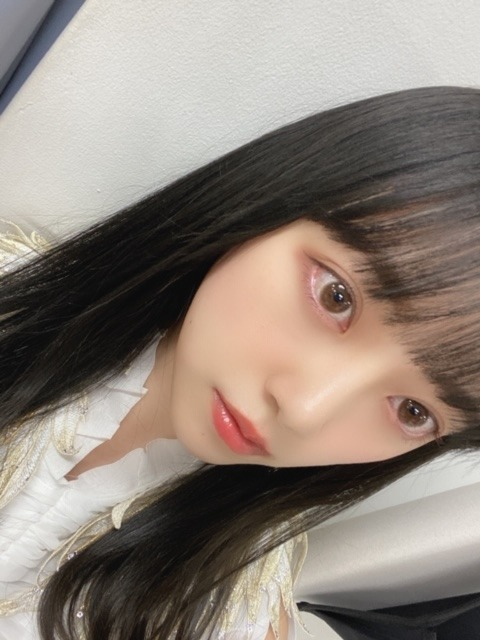
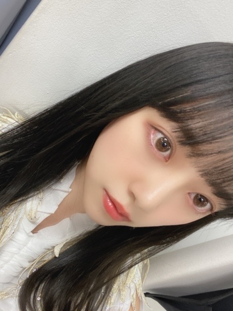

2020/0402Thu4月
こんにちは☺︎
みなさん、お元気でしょうか？
マスク手洗いうがいはもちろん
毎日体温を測り、体調に少しでも違和感がある場合は自覚症状がはっきりと無くても周りの人への配慮の1つとして病院に行くなど自分の体調にしっかりと向き合いましょう
早くいつも通りの生活に戻れる事を祈り、考え、行動していきましょう!
今日の空は雲がなくて清々しいですね~
きよきよしい、じゃなくて、すがすがしい ですよね
笑
ちゃーんとわかってますよ☺︎
もう間違えないでしょう☺︎


沢山寝たので今日は元気です
朝からブログを書いています
銀魂2を途中まで観てるから早く続きを観なきゃ
ハッピーデスデイも観なきゃ
フォロワーズも観なきゃ
あわわわ


もっちもちのほっぺ...
これは痩せなきゃですぞ...
頑張ります
あと最近気づいたのは口が小さいこと。
ちょこん。ってしてますね。富士山型です
リップを塗る範囲が狭くて悲しいです
でも唇を褒めてもらえると嬉しいです
明日はMステ3時間spです
見てください!
見つけてください!
春ですね

どこ見てるんやろ
デハ
こんにちは☺︎
みなさん、お元気でしょうか？
マスク手洗いうがいはもちろん
毎日体温を測り、体調に少しでも違和感がある場合は自覚症状がはっきりと無くても周りの人への配慮の1つとして病院に行くなど自分の体調にしっかりと向き合いましょう
早くいつも通りの生活に戻れる事を祈り、考え、行動していきましょう!
今日の空は雲がなくて清々しいですね~
きよきよしい、じゃなくて、すがすがしい ですよね
笑
ちゃーんとわかってますよ☺︎
もう間違えないでしょう☺︎
沢山寝たので今日は元気です
朝からブログを書いています
銀魂2を途中まで観てるから早く続きを観なきゃ
ハッピーデスデイも観なきゃ
フォロワーズも観なきゃ
あわわわ
もっちもちのほっぺ...
これは痩せなきゃですぞ...
頑張ります
あと最近気づいたのは口が小さいこと。
ちょこん。ってしてますね。富士山型です
リップを塗る範囲が狭くて悲しいです
でも唇を褒めてもらえると嬉しいです
明日はMステ3時間spです
見てください!
見つけてください!
春ですね

どこ見てるんやろ
デハ
2020/04/02 11:12


コメント(356)
どんな髪型でも似合っていて素敵ですが、今回のは大人っぽくて清楚オーラが漂ってますね！
なのにかわいくて美人さんですから、もう言うことなしですね！
ハッピーデスデイ、私も気になってます。
昨日は翔んで埼玉を観ました、楽しかったのでオススメです♪
お忙しいとは思いますが、お身体に気をつけてご自愛下さいね☆
顔の肉の落とし方教えてください
届くのが楽しみですー！
ブログ更新ありがとうー
メール見たけど、未央奈ちゃんの書きたい時に書きたいこと書けばいいと思うよー！
未央奈ちゃんのブログ見ると元気になるし！
これからも毎回ちゃんと読むね！
いつもありがとうー！！
ブログ更新・・・本当にありがとう！
前に北野日奈子ちゃんが毎日ブログ更新してて
凄く嬉しかったです。
堀ちゃんは忙しいとか時間が無いとか言い訳せず
全力でファンに対して本気で真面目な姿勢は乃木坂で
ナンバー１くらいです！！
そして最初の加入からブレない姿勢も最高です！！
そして可愛さと美しさが日に日に高まっていますね(*´ー｀*)
堀さんも無理なく、体調を良く過ごしてくださいね！
はちみつを摂取しているためか健康です。
未央奈ちゃんは何か対策してますか？
本当に可愛くて大好き
いつも可愛くて面白い未央奈ちゃんに癒されます。
Mステもちろん見るので、テレビの前で応援します！！！
1期生がまいやんを囲むダンスシーンいいですよね
もちろん未央奈ちゃんも見てますよ！
応援しています。
もちもちほっぺー、可愛いじゃーん！
今のままでも充分可愛いですよー。今のままを維持するのが大変かもしれないけど、、、。
ブログ更新の頻度高いのはめちゃめちゃ嬉しい事ですよー！
無理していないなら是非気になさらず続けて下さいよー。
継続は力なりー。後から振り返えることもできるし笑
幸せの保護色を聞いて、今回のコロナの件もあって、改めて日常の当たり前の生活って幸せなんだなって感じるよね。このタイミングの幸せの保護色ってなんか神がかってるよねー。と感じる日々です。
未央奈ちゃんも健康に気をつけて！昨日の絵も最高でした笑
2回目のコメントです。
今日は久しぶりに晴れて、暖かく、少し風が吹いていて春を感じました。
清々しいですね。
未央奈ちゃんの、小さい口は可愛いチャームポイントだと思います。
目がぱっちりとしていて大きいので、お顔の全体のバランスが良く、整っていて、女の子の理想です。
全く太ってないと思います。
むしろ、スリムです。。
未央奈ちゃんのもちもちなほっぺは可愛くて好きです。
ほっぺがもちもちでも、体が細いのは羨ましいです。
明日のMステ、見ます。
楽しみにしています。
体調には気をつけて下さい。
応援しています。
未央奈ちゃんも、体調には十分気をつけてください！
僕もしっかり気をつけます！！
明日のMステ、楽しみにしてます！！ がんばってね
今年度もしっかり応援してます
ブログは更新頻度高い方が嬉しいです‼️
更新頻度は大切だと思います！
プロ意識流石です いつもありがとうございます
唇もさその小さい口も全て可愛い 明日のMステ楽しみ٩꒰⑉•ᴗ•⑉꒱۶
堀ちゃんが高頻度でブログ更新してるの全然変じゃないと思う！
ブログって書きたいことがあるから書くものだと思うし、
見てるこっちはいろんなこと発信してくれてうれしいと思ってるよ！
忙しい中でもたくさん更新してくれてうれしいし、これからも続けてほしいな！
Mステ見るねー！
堀ちゃんの気持ち凄く嬉しい。けど忙しい中大丈夫かなぁ…って思ったり…。でもモバメが来る度ブログが更新される度、堀ちゃんに笑顔にして貰ったり勇気付けられてます。ありがとう。
これからも楽しみに待ってます。
よたぽ含め皆を笑顔に元気にしてあげて下さい。
ではまた〜。
みおちゃん、最近しでかしたことは～
ありますかぁ～～～⤴️⤴️❔❤️❤️❤️❤️❤️笑顔
おいらは、朝仕事に行く途中に
携帯電話を忘れてたのに気がつき
「携帯を取りに行かなきゃ❕」
「遅れるから、会社に電話しよ～❕」と
携帯を～今持ってないのに、ボケることです❕笑
もはや、重症化ですねぇ❕笑
❇️おすまし！より⚜️❇️彡
痩せててうらやましいです
学校休校のせいで体重増えてしまった
明日のmステ楽しみにしてます
未央奈ちゃんも体調気をつけてください
みおなちゃんも体調には気をつけてくださいね
口可愛いよ！もちろん全てが可愛いけどね。
僕は影響力ないのでみんなに呼びかけてもたいして変わらないけど、こうやって未央奈とかメンバーが対策を呼びかけてくれるとすごい有り難いです！みんなで早く乗り切りましょう！未央奈も気をつけて！
未央奈がさくらちゃんのことをさくらと呼んでいたのに
嬉しくなっちゃいました
MステSP見るね！
もちもちほっぺの未央奈も好きだよ～
未央奈も体調気を付けてね
お互い体には気をつけましょうね
野球部のイメージは？？
良いと思う!!
Ｍステ見るね!唇可愛いよ♥
子供がかくれんぼうをするみたい~かわいい。
みおさんのファンならどこでも見つけるよ。
きゃーー、黒ニット姿めちゃ可愛い(*´ω`*)♡♡♡♡
このメイクはプライベートの時、仕事の時？
なんか赤い色のアイラインは珍しいなあと思った
ちなみに、昨日のまゆたんのレコメンを聴きました？
すぐ馴染みになって、長年にやっててみたいで、のりさんとも仲良しみたいだ
これからも頑張って(/･ω･)/
Mステ頑張って(/･ω･)/
あれ？今日のブログの締めはかたかなの「デハ」？
未央奈さんの唇かわいくて好きです
ブログで発信してくれて嬉しいです
ありがとう
体調に気を付けてね
んじゃね～！( ´∀｀)Σ⊂(ﾟДﾟ )
この頃は精神が不安定でヤバイ
可愛い！
またコメントします！
まめに更新してくれるのすごく嬉しい。アイドルの鑑だね。
僕は元気だよ。こんな時だから気づかないうちに自分が感染しないように他人に感染させないように、一人一人の心がけが大事だよね。
口鼻目に触らないことも大事らしいよ。未央奈も充分に気をつけてね。
今日の空は清々しいね。間違えるのも可愛いよ。
たくさん寝られて良かった。でもレコメンに未央奈がいない水曜の夜が寂しいなあ。
もちほっぺも可愛いよ。全然痩せてると思うけどなあ。小さい口も綺麗な形してて可愛いよ。
明日はMステ見るよ！楽しみ！
では！
体調に気をつけて頑張ってくださいね。
可愛いですね。
口が小さいだってー？！
そんな事ナイ、ナイ！
未央奈の好きなところ色々～たくさん、たくさん
あるけれど、その可愛い口がいいんじゃないかぁー！
確かに数々の魅力的な口、唇があるけれど、未央奈
の口も唇も絶妙なバランスで未央奈を未央奈らしく
してるんだよぉー！ とても素敵な個性じゃないか！
とても似合ってるんだよ その唇が未央奈の色んな
表情を豊かにしてるんですよぉ～
本気の未央奈推しは未央奈の全てを受け入れて好き
なんです。
当然その可愛い唇なんかお気に入り登録済みだよ（笑）
ミュージックステーション楽しみしてるで。
最後のショット、ホントにどこ見てんやろ？
魂抜けたような惚けた顔に見えんなぁ。笑笑笑
ではは！（笑）
私だけでしょうか？
体調に気をつけて元気にすごしましょう。
o(^-^)o
早くも4月ですね。
世間も自身の状況も不安ばかりです。
ブログを沢山更新してくれてありがとうございます。
生きる活力となってます。
可愛く癒され写真ばかり。
コレクションが厚くなる幸せ、この上なく嬉しく感無量です。
可愛いすぎますよ。
確かに口が小さいのも未央奈さんの魅力かな。
確かにリップを強調するのもその分大変ですね。
でもセクシーな唇ですよ。
自分の花粉症は薬無くても平気になり、峠は越えたようですが、未央奈さんはいかがかな？
春を楽しみましょうね。
何とか踏ん張れるるかな、自分...
お身体にはお気をつけてくださいね。
頑張って行きましょう！
特に美容のお話は読んでてすごく楽しいからまたいつかお話してほしいな☺︎
写真で見る未央奈もまた、綺麗だね。まだ若いからお肌が綺麗だね。
最近明るい時間が増えてきたからちょっと混乱するときがある(^^;
マスク手洗いうがいはもう基本みたいになってるよね、早期発見早期対応大事にだね！
呼びかけありがとう！
きよきよしいの方が個人的に好きだけどなw
なんか可愛いし。
沢山寝て元気なら良かった！
未央奈の元気がみんなにも伝わって世の中良くなるかもね！( ・∇・)w
見るのたくさんか！一緒！分かる！あわわだw
こんな時だけど、楽しめることいろいろあるから頑張れるよね♪
もちほっぺってそれか！
前のタイトルですでに匂わせてたのかw
全然それくらいで良いと思うけどなー。痩せすぎも注意だぞう。
口が小さいかな？女の子の口って感じだけどな。富士山型とか種類があるんかw
何か型って相撲とか空手みたいだなw
俺は未央奈の口、綺麗な形してるから好きだよ。
口は大きさじゃないでしょ(゜ー゜)(。_。)ｳﾑ
Mステみます！楽しみにしてる！頑張って！
今回の髪型も気になるし見つける！
写真はきっと、未央奈にしか見えない世界が見えてたんだろうねw
千里眼ー
dewa
ブログもモバメも755もマメに更新してくれるファン想いなところが
なによりも未央奈を推してる理由です！！！
すっっっっごく混んでる全握で遅い時間帯でほんとに疲れてるだろうにほんの一瞬でも目を見て最高な対応をしてくれたところから未央奈を推しはじめました！あの時の私は間違っていなかったなと！！！
これからもずっと応援し続けます！だいすきです＾＾❤︎
コメントする